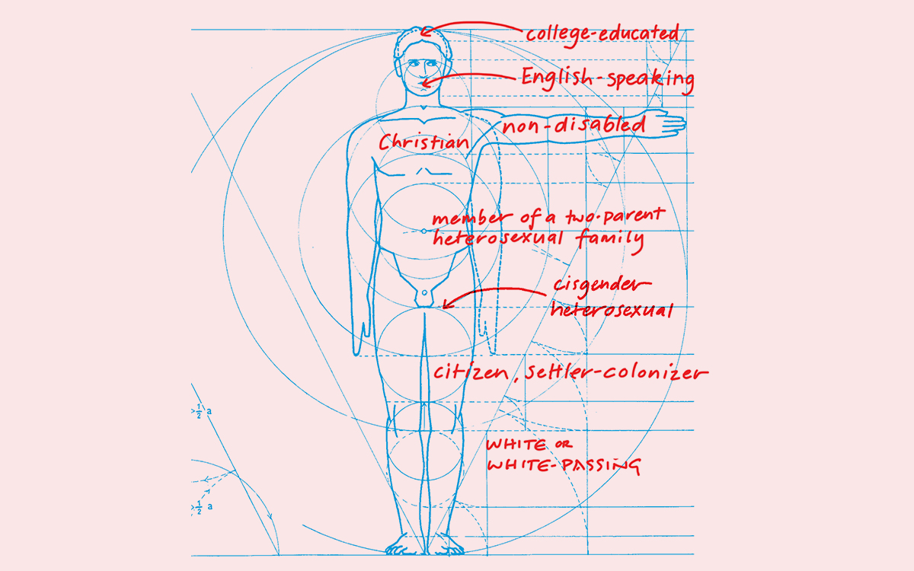

Words by Ellen Lupton and Leslie Xia | May 24th, 2021

What does it mean to design “normal”NORMAL /'nôrməl/ nor·mal noun the usual, average, or typical state or condition. things for “normal” people?
Western society defines certain individuals and communities as average and ordinary, while everyone else is something other. People living inside the norm bubble often don't recognize their own special status, because norms aren't supposed to be special. Synonyms for the word normal include standard, average, typical, and ordinary. Norms are invisible, becoming present only when they rub up against difference.
Graphic designers are in the norm business. We employ legible fonts and familiar interface conventions in order to churn out seemingly neutral, user-friendly messages. We use grids, hierarchies, and tasteful type pairings to unify publications and websites. We produce brand standards and corporate identity manuals to regulate the public image of companies and institutions.
Each year, we harvest a fresh crop of sans serif typefaces claiming to deliver content in anonymous, trouble-free text blocks. It's Helvetica's world. We just live in it.
Each year, we harvest a fresh crop of sans serif typefaces claiming to deliver content in anonymous, trouble-free text blocks. It's Helvetica's world. We just live in it.
Norms appear throughout design culture. Uniforms and road signs are norms. Icons and emoji are norms. Style sheets, templates, and content management systems are norms. Social media interfaces are norms. At its core, typography is a norm, invented to reproduce text in a consistent, error-free manner.
The rules of writing and typography encompass grammar, spelling, punctuation, capitalization, and the correct use of s p a c e s and - dashes -.
People use graphic design to study and transform social relationships as well as visual ones. The words and concepts we use to talk about design—in both normative and disruptive terms—also ripple through the critical writing about race and feminism. Design is a tool for diagramming and exposing structures of power.
In the 1920s, designers in Europe argued that cubic buildings, sans serif typefaces, photographic images, and functional products could be useful and relevant to people across nationalities and income groups. Such seemingly neutral forms resisted the nationalist and fascist ideologies that pitted groups against each other. Despite modernism's egalitarian ideals, however, the concept of universal or transnational design solutions presumed a male, Western European subject.
According to poet and activist Audre Lorde, the “mythical norm” is what a given society understands to be generically human. Writing from the perspective of a Black queer woman, Lorde noted that the norm in the US is typically
“white, thin,male,young, HETEROSEXUAL, Christian,and financially secure.” The mythical norm is an artifact of White supremacy, upheld by racism and oppression.
Lorde writes, “As white women ignore their built-in privilege of whiteness and define woman in terms of their own experience alone, then women of color become 'other,' the outsider whose experience and tradition is too 'alien' to comprehend.” White women are complicit in preserving the normative system, which inflicts ongoing violence—physical, psychological, and economic—on Black people and people of color.
Exclusion from the protective bubble of normativity leads to varying degrees of oppression or inequality. People who embody some or all aspects of the norm tend to treat their ostensibly typical attributes as neutral, invisible, or nonexistent. Being normal seems natural—not a special privilege. It's easy to say “I don't see race” when you live inside the bubble of Whiteness.
Indeed, any norm tends to disguise itself and disappear. Thus, a White, heterosexual, cisgender man may ignore the superpowers bestowed on him by the mythical norm—believing instead that his achievements are wholly earned through hard work, talent, and merit. A White woman may feel the forces of sexism while denying her race-based privilege. Although the norms of Whiteness or maleness may appear invisible to people who are White and/or male, they are oppressively visible to those excluded by their bubbles.
Although norms are deeply embedded in design's professional ethos and official history, protest and resistance are crucial parts of this history, too. Dada and Constructivist artists used diagonal lines, mismatched fonts, and montaged photos to challenge thousands of years of static symmetry. In the mid-twentieth century, industrial designers rejected the Renaissance ideal of the perfect young man and began creating “ergonomic” products, designed to fit more bodies. Disability historian Aimi Hamraie calls this area of inquiry “epistemic activism.” New guidelines for human measurements encompassed a wider range of people.
Not all products are Ergonomic.
The COVID-19 crisis revealed that the gowns and masks used in hospitals and care facilities are designed to fit a so-called average male body, making them dangerous for caregivers of smaller stature, including many women.
Writers and thinkers can use the tools of graphic design to study and change social relationships.
Writers and thinkers can use the tools of graphic design to study and change social relationships.
The words and concepts we use to talk about design ripple through the critical writing about race and feminism. Terms like axis, intersection, and orientation are familiar to graphic designers. Writers and philosophers use these terms too, creating spatial metaphors for concepts like racism, sexuality, and gender. Spatial ideas such as “margin/center” help people create vivid mental pictures of dominance. These concepts prompt readers and listeners to construct diagrams in the gray matter of the mind. White savior narratives are told from the perspective of White people who become enlightened and help improve the lives of people in marginal groups. Such narratives are said to “center Whiteness,” a process of erasing the margins and focusing on the emotional needs and seemingly heroic actions of the dominant group.
Sara Ahmed's book Queer Phenomenology unpacks the spatial language of queerness. The phrase “sexual orientation,” commonly used to label a person's attraction to people based on their gender identity, suggests how bodies gravitate toward other bodies, as if drawn by a magnetic force. Ahmed wants to rethink how a body's turn “'toward' objects shapes the surfaces of bodily and social space.” She states that queer comes from the Indo-European word meaning “twist.” Historically, to be queer meant to deviate from the straight line of social norms. Today, people use the word queer to express pride and solidarity.
Design is normative, but it can also be transformative. Binary oppositions lure the mind with their shiny, neatly defined polarities.
Just one of many alternative models is the spectrum, which contains endless shades of difference between opposing endpoints. Intersections, twisting paths, and mixed ecologies push beyond the either/or structure of binary categories.
Excerpt from Extra Bold: A Feminist, Inclusive, Anti-racist, Nonbinary Field Guide for Graphic Designers, now available from Princeton Architectural Press.